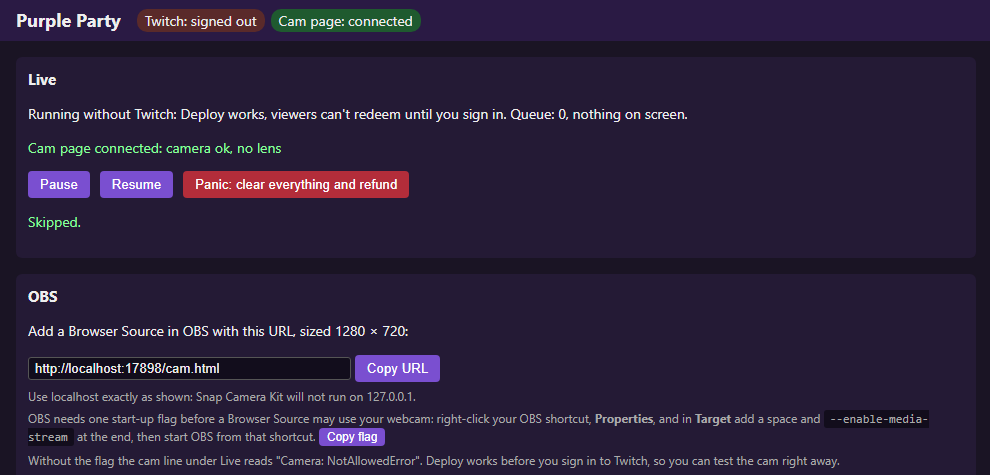
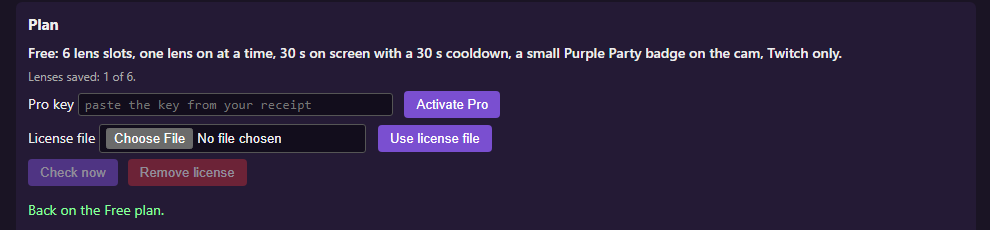

title: Purple Party: Snap lenses your Twitch viewers trigger with channel points
description: Purple Party is a Windows app for Twitch streamers. Viewers spend channel points to put a Snap lens on the streamer's webcam. Free with 6 lens slots; Pro $9.99 a month or $79.99 a year, with a 14-day free trial.
---
Purple Party · Windows app for Twitch streamers
Let your chat put lenses on your cam.
Purple Party turns Snap lenses into Twitch channel point rewards. A viewer redeems one, and the lens appears on your webcam in OBS for a set time (30 seconds on Free), then goes away on its own.
Channel point rewards, made for you. Sign in with Twitch and Purple Party creates and manages a reward for each lens you add, with its own point cost.
Lenses on your real camera. Lenses are rendered by Snap Camera Kit on your own PC, in a page you add to OBS as a Browser Source.
A queue and a panic button. When a lens is already on, the next one waits its turn. Pause, Resume and "clear everything and refund" sit at the top of the dashboard.
Help from your mods. You can let the mods you tick use the dashboard from their own phone or PC, signing in with Twitch. They can do everything except switch lenses on or off, and you can untick anyone at any time.
Runs on your PC. No account with us. Your settings stay in your Windows profile.
Needs Windows, OBS Studio and a Twitch channel with channel points.

The dashboard: live controls, and the address to add to OBS.
Free and Pro
Free
6 lens slots, no time limit
$9.99
Pro, per month
$79.99
Pro, per year
Free
Pro
Price
$0
$9.99 a month or $79.99 a year
Free trial
Not needed
14 days
Lens slots
6
15
Lenses on at once
One (switching one on switches the others off)
Any number
Time on screen and cooldown
Fixed at 30 seconds
Set per lens
Purple Party badge on the cam
Small badge, bottom left
No badge
Triggers
Twitch channel points
Twitch channel points
Mods on the dashboard
Yes
Yes
One Pro key works on one PC. Prices are in US dollars; sales tax or VAT is added at checkout where it applies. Pro starts with a 14-day free trial; checkout shows the date of your first charge, and cancelling before then means you are not charged. Subscriptions renew until you cancel, and you can cancel at any time.
The Free and Pro plans arrive with Purple Party 0.1.2. Pro checkout is not open yet; when Pro goes on sale, a "Get Pro" link appears here, and in the app's Plan card after the update that carries it.

The Plan card: paste the key from your receipt and press Activate Pro.
How Pro works
After you buy, Lemon Squeezy emails a receipt with your license key.
Paste it into the Plan card on the dashboard and press Activate Pro.
The app checks the key with Lemon Squeezy about once a day and keeps working offline for up to 14 days.
If Pro ends, Purple Party goes back to Free. Your lenses stay saved.
Legal and support
Purple Party uses Snap Camera Kit. Before any lens can run, the app asks you to agree to Snap's Terms of Service and acknowledge Snap's Privacy Policy. Purple Party is made by Flags Software and is not made by Snap or Twitch.